Практичний досвід · журнал «ДентАрт» 2016 №4
Клінічні особливості отримання двоетапного двошарового відтиска
CLINICAL ASPECTS OF THE TWO-STAGE METHOD FOR TAKING A DOUBLE-LAYER IMPRESSION
Існують різні класифікації відтисків за методом їх отримання, запропоновані вітчизняними і зарубіжними вченими. В основі однієї з останніх класифікацій лежить принцип етапності отримання відтиска, а також кількості шарів, з яких він складається.
Згідно з цією класифікацією, сучасні методи отримання відтиска еластичними матеріалами можна розподілити на дві великі групи: одноетапні і двоетапні. При одноетапному знятті відтиска ложку з відтискним матеріалом накладають один раз і після виведення ложки з порожнини рота отриманий відтиск відправляють у лабораторію. Суть двоетапних методів полягає в тому, що відтиск знімають по черзі: спочатку базовою масою, а потім, після її структурування для уточнення деталей протезного ложа, роблять повторне накладання отриманого відтиска з додаванням коригувального матеріалу.
Двоетапні методи отримання відтиска користуються великою популярністю у незнімному протезуванні, оскільки при цьому:
- не вимагається обов'язкової присутності асистента лікаря та ідеальних мануальних навичок;
- є досить часу для проведення всіх необхідних маніпуляцій;
- при потраплянні в зону протезного ложа невеликої кількості повітря, вологи або крові можна компенсувати ці аплікаційні помилки;
- можна отримувати задовільні відтиски у досить великому відсотку випадків.
На вибір впливає і низька інформованість лікарів-практиків про інші сучасні методи отримання відтисків.
На перший погляд, отримання двоетапного двошарового відтиска здається досить простим і нескладним методом. Загалом із цим можна погодитися, але слід пам'ятати про деякі особливості і нюанси, на які потрібно звертати увагу при отриманні відтисків цим методом.
Спочатку слід продумано обирати матеріал для двошарового відтиска двоетапним методом. Стрімке оновлення асортименту відтискних матеріалів, пропонованих різними виробниками, вимагає, щоб лікар знав особливості роботи з кожним із цих матеріалів, їх властивості. Це обов'язкова умова якісного протезування.
Вибір матеріалу роблять за двома основними параметрами: вигляд і консистенція. Для одержання високоточних відтисків підходять тільки певні види відтискних матеріалів. На підставі численних досліджень можна з упевненістю стверджувати, що для одержання прецизійних відтисків більшою мірою підходять матеріали, створені на основі поліефірів і силіконів. Тобто на сьогодні вибирати (для отримання точних відтисків у незнімному протезуванні) доводиться серед трьох видів матеріалів: поліефірні, А-силіконові і С-силіконові. Ці види матеріалів широко представлені різними типами в'язкості, що дає можливість робити цілеспрямований підбір залежно від клінічної ситуації.
Відтискні матеріали з урахуванням консистенції класифікують на різні типи. За ISO 4823 (1992) еластомери поділяють на матеріали високої, середньої і низької в'язкості. У переробленій специфікації №19 ADA введено ще один тип — дуже висока в'язкість. Консистенція в основному регулюється ступенем наповнення пасти (табл. 1, 2). З усіх видів відтискних матеріалів лише А-силіконові (наприклад, Honigum, DMG) включають матеріали всіх типів в'язкості, що пояснює зростання популярності саме цих матеріалів у стоматологів-практиків.
Слід пам'ятати, що методика отримання відтиска відіграє важливу роль при виборі відтискного матеріалу. Проведені дослідження засвідчили, що метод отримання відтиска має значніший вплив на розмірну точність відтиска і глибину проникнення відтискного матеріалу в зубоясенну борозенку, ніж вид використовуваного матеріалу і вид відтискної ложки. Виходячи з цього, лікарям слід робити вибір відтискного матеріалу в залежності від того, яким методом планується отримати відтиск.
| Тип | В'язкість | Тип | ||
|---|---|---|---|---|
| ISO | ADA | ISO | ADA | |
| — | I | дуже висока | — | 13-20 |
| I | II | висока | 23-32 | 20-32 |
| II | III | середня | 31-39 | 30-40 |
| III | IV | низька | 36-55 | 36-55 |
| Тип ISO 4823: 1992 | Консистенція (діаметр диска у мм) | Характеристика консистенції | |
|---|---|---|---|
| В'язкість | Маркування | ||
| 0 | від 13 до 20 | дуже висока | Putty |
| 1 | від 20 до 31 | висока | Heavy |
| 2 | від 31 до 36 | середня | Medium |
| 3 | 36 мінімально | низька | Light |
Важливим фактором, що впливає на якість відтиска, є стан протезного ложа під час процедури отримання відтиска (фото 1). Більшість авторів сходяться на думці, що чітке відображення меж препарування, особливо у приясенній зоні, практично неможливе без ретельної підготовки протезного ложа перед отриманням відтиска.
При під'ясенному розташуванні меж препарування (для чіткого відображення на відтиску останніх) треба проводити ретракцію ясенного краю. Методів ретракції досить багато, кожен має свої плюси і мінуси. Одним з ефективних і поширених методів є механохімічний з використанням ретракційних ниток. У нашій практиці досить часто застосовується техніка подвійної нитки (фото 2). Суть цієї техніки полягає в тому, що спочатку на дно ясенної борозенки укладається перша, тонка, ретракційна нитка, а поверх неї на рівні ясенного краю накладається друга, товща. При потраплянні в зону протезного ложа невеликої кількості повітря, вологи або крові двоетапне зняття дозволяє компенсувати аплікаційні помилки лікаря. Це відбувається за рахунок того, що при видавлюванні надлишків коригувального матеріалу на другому етапі усуваються включення повітря і рідини. Однак при цьому через тиск коригувального матеріалу на пружні стінки базового матеріалу можлива його деформація.
Однією з необхідних умов зниження деформаційних похибок двоетапних відбитків є застосування базового матеріалу з високою кінцевою твердістю. Рекомендована твердість базового матеріалу повинна бути не менше 70 shore A.
Один з недоліків А-силіконів — ручне замішування цих матеріалів слід робити без латексних рукавичок. Причина в тому, що до складу каталітичної пасти входить платиновий каталізатор. Основними речовинами, які знижують активність платинового каталізатора, є сірка та її сполуки (слід пам'ятати, що сірка — природний компонент латексу, з якого виготовлена більшість видів рукавичок і рабердаму). Замішування проводять до гомогенного стану двох паст, при якому колір маси стає повністю однотонним (фото 3).
Після замішування матеріалу високої в'язкості і внесення в ложку отримують базовий відтиск. При двоетапному отриманні відтиска виправдане застосування базових матеріалів з маркуванням Fast (фото 4). Наявність на упаковці цього позначення свідчить про коротший термін застигання матеріалу. При використанні такого матеріалу зменшується тривалість перебування ложки в роті пацієнта (відтак зменшується дискомфорт від цієї процедури), а також скорочуються (хоч і ненабагато) затрати часу лікаря на етапі отримання відтиска.
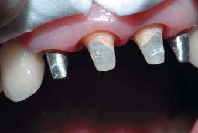
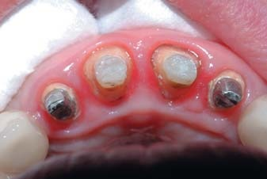
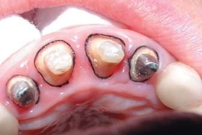
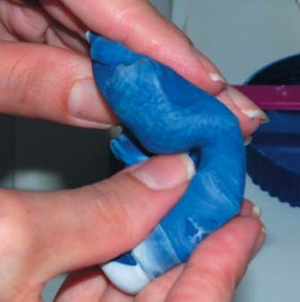
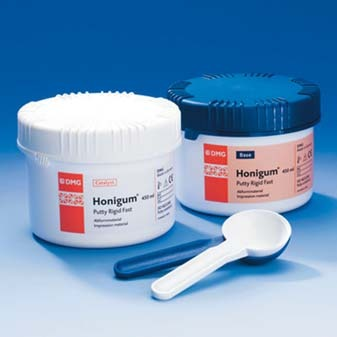
Перед накладанням ложки з базовим матеріалом видаляють другу ретракційну нитку (товщу). На цьому етапі важливо правильно позиціонувати ложку на зубному ряду (фото 5). У порожнині рота ложка повинна бути встановлена без перекосів. Бажано, щоб товщина матеріалу між стінками ложки і зубами була рівномірною на всіх ділянках ложки (фото 6).
Перед другим етапом проводять підготовку базового відтиска. На базовому відтиску зрізають міжзубні перегородки, піднутрення. Дуже важливо, щоб базовий відтиск при повторному введенні безперешкодно встановлювався у правильній позиції. Для того, щоб у цьому переконатися, рекомендується робити попереднє примірювання ложки в порожнині рота. Крім того, для зниження компресійного тиску коригувального матеріалу на базовому відтиску вирізають відвідні канали (фото 7). Наявність відвідних каналів сприяє відтоку надлишків коригувального матеріалу (фото 8).
Після завершення підготовчих робіт з базовим відтиском беруться до отримання остаточного відтиска. За наявності в зоні зубного ряду виражених піднутрень (виражені міжзубні проміжки при пародонтиті, проміжні частини мостоподібних протезів, коронки на імплантатах і т. д.) слід провести їх ізоляцію від потрапляння текучого коригувального матеріалу (фото 9). Ізоляцію роблять шляхом заповнення зон піднутрення воском, базовим матеріалом без додавання каталізатора і т. д. Якщо цього не зробити, то в подальшому можливе виникнення пластичної деформації отриманого відтиска при його виведенні.
На другому етапі при виборі коригувального відтискного матеріалу потрібно враховувати його текучість. При двоетапному отриманні відтиска слід використовувати коригуючий матеріал низької в'язкості (має гарну текучість). Чим вища в'язкість коригувального матеріалу, тим вищим буде тиск на стінки базового відтиска. Відповідно при цьому зростуть деформаційні похибки, що призведе до зниження точності відтиска.
Перед другим етапом отримання двоетапного двошарового відтиска із зубоясенної борозенки виводять першу ретракційну нитку (фото 10). Для запобігання кровоточивості ясенного краю нитку перед виведенням необхідно змочити. Після виведення нитки борозенку рясно промивають водою, щоб повністю змити залишки хімічних речовин.
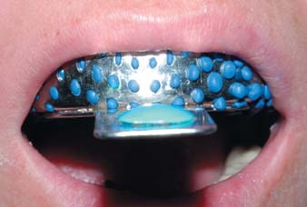
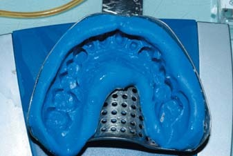
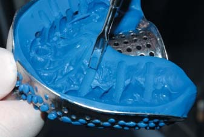
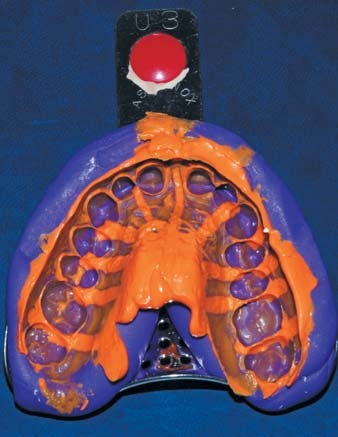
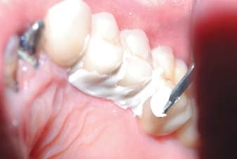
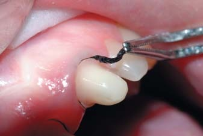
На другому етапі перед внесенням ложки в порожнину рота базовий відтиск заповнюють коригувальним матеріалом (фото 11). При використанні систем автозамішування установку внутрішньоротової канюлі на змішувальну доцільніше робити після того, як базовий відтиск заповнений коригувальним матеріалом (фото 12). Відразу після заповнення коригувальним матеріалом зони протезного ложа роблять спрямоване внесення матеріалу в зубоясенну борозенку навколо опорних зубів, звертаючи увагу на те, щоб кінчик канюлі був постійно занурений у матеріал (фото 13).
Наступний етап — накладання базового відтиска. Дуже важливо провести правильне позиціонування відтиска у ротовій порожнині, звертаючи увагу на те, щоб ложка з базовим відтиском була максимально точно встановлена на зубному ряду. Під час полімеризації коригувального матеріалу відтиск утримують руками в нерухомому стані на зубному ряду. Після закінчення часу, потрібного для повного застигання матеріалу, відтиск виводять. При цьому слід звертати увагу на те, щоб шлях зміщення ложки із зубного ряду був максимально паралельний осі опорних зубів. На цьому етапі існує ризик виникнення деформації відтиска, яка залишиться непоміченою і в подальшому може призвести до значних похибок готових ортопедичних конструкцій.
Після виведення готовий відтиск оцінюють (фото 14). Перевіряють якість відображення рельєфу поверхні протезного ложа, особливо приясенної зони опорних зубів (фото 15). На відтиску не має бути пор, порожнин або відтяжок, відтискна маса повинна щільно прилягати до стінок ложки. Після цього відтиск дезінфікують і відправляють у лабораторію.
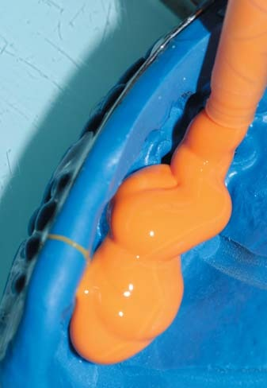
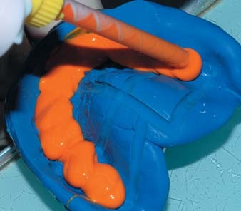
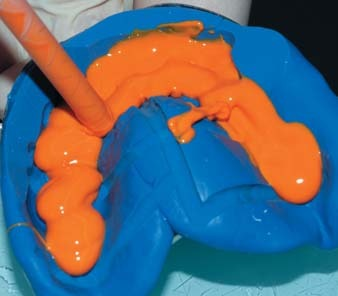
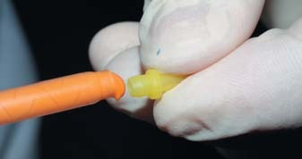
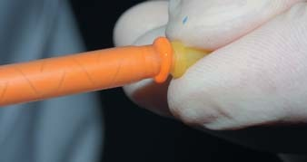
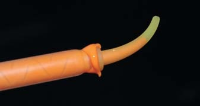
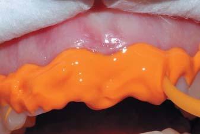
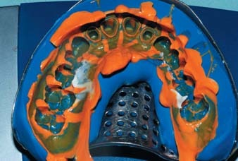
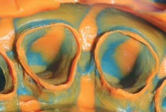
Незважаючи на значний прогрес у розвитку відтискних матеріалів, отримання відтиска все ще залишається складним лікарським етапом. Він вимагає від лікаря максимальної концентрації уваги, продуманого вибору відтискних матеріалів, а також ретельної підготовки протезного ложа перед отриманням відтиска.